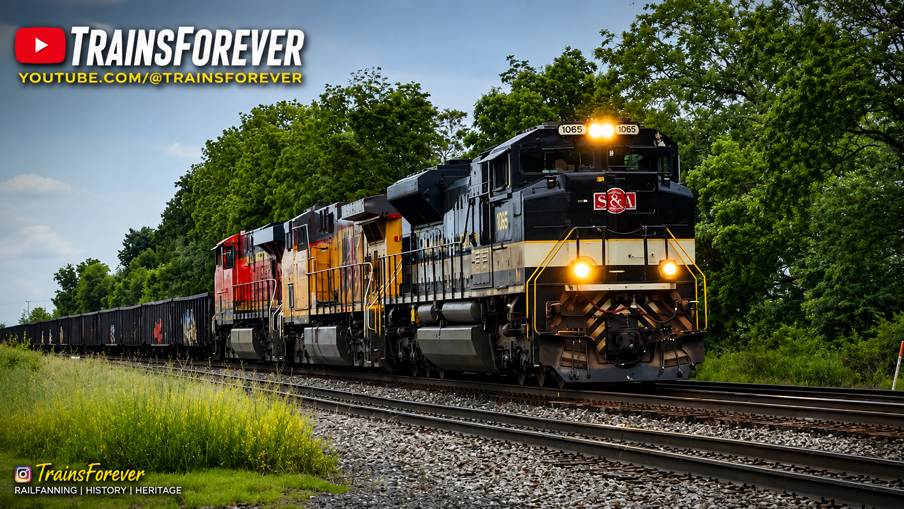

TrainsForever Archive Museum
Welcome to the Savannah & Atlanta Heritage Exhibit.
Norfolk Southern Heritage Unit NS 1065 honors the legacy of the historic Savannah & Atlanta Railroad. This exhibit preserves both the history of the railroad and my documented encounters through photographs, videos, and museum records.
Within this exhibit you'll find railroad history, locomotive information, museum statistics, museum records, featured media, and curator's notes documenting NS 1065.
Heritage Unit
NS 1065
Original Railroad
Savannah & Atlanta Railroad
Railroad Years
1908–1962
Locomotive Model
EMD SD70ACe
Builder
Electro-Motive Diesel (EMD)
Horsepower
4,300 HP
Heritage Paint Unveiled
May 2012
Current Status
Active
Museum Exhibit Number
01
The Savannah & Atlanta Railroad operated from 1908 until 1962, serving communities throughout Georgia with regional freight service before eventually becoming part of the Seaboard System. Although relatively small, it played an important role in southeastern railroading. In 2012, Norfolk Southern honored the railroad's legacy by unveiling Heritage Unit NS 1065 as part of the original 20-unit Heritage Program.
Documented Catches
6
Leading Catches
4
Trailing Catches
2
Archived Videos
6
Archived Photographs
6+
First Documented Catch
June 2022
Last Documented Catch
October 2024
Documented Locations
Goshen, Indiana • Elkhart, Indiana
Favorite Catch Location
Goshen, Indiana
Railfan Companion
Alex
Museum Record Updated
July 2026
🟢 Exhibit Status — Complete
📸 Photograph Documented — Yes
🎥 Video Documented — Yes
🚂 Leading Catch Verified — Yes (4)
🚃 Trailing Catch Verified — Yes (2)
🏛️ Museum Collection Status — Preserved
📁 HTML Prototype — Complete
Photographer
TrainsForever
Featured Location
Goshen, Indiana
Featured Image
Official Museum Photograph

Official museum photograph of NS 1065.
Featured Video
Official Museum Selection
Available on the TrainsForever YouTube Channel.
NS 1065 was first documented in June 2022 and has since become one of the better documented Heritage Units within my collection. Throughout six documented encounters, the locomotive has been photographed and filmed in both Goshen and Elkhart, Indiana. Goshen remains my favorite location for documenting NS 1065. Every encounter preserved in this exhibit represents a genuine moment from my railroad archive and contributes to the continuing growth of the TrainsForever Archive Museum.
🟢 Welcome
🟢 Locomotive Information
🟢 Railroad History
🟢 Museum Statistics
🟢 Museum Record
🟢 Museum Status
🟢 Featured Photograph
🟢 Featured Video
🟢 Curator's Notes
🟢 Exhibit Complete